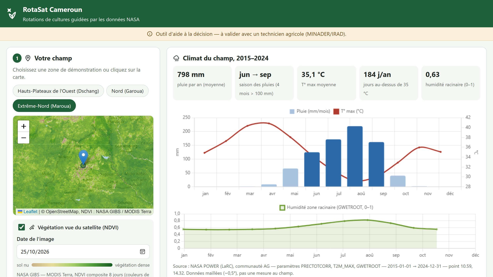
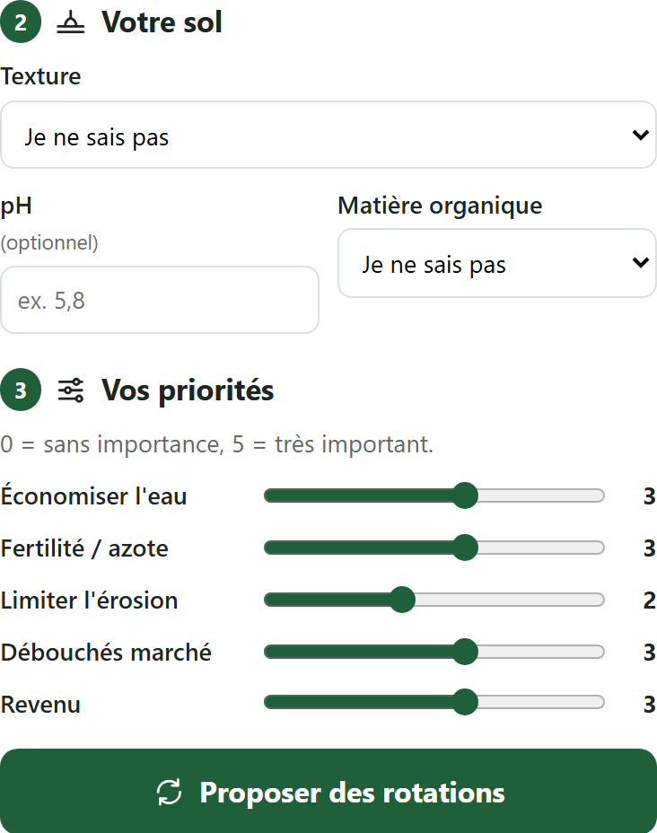
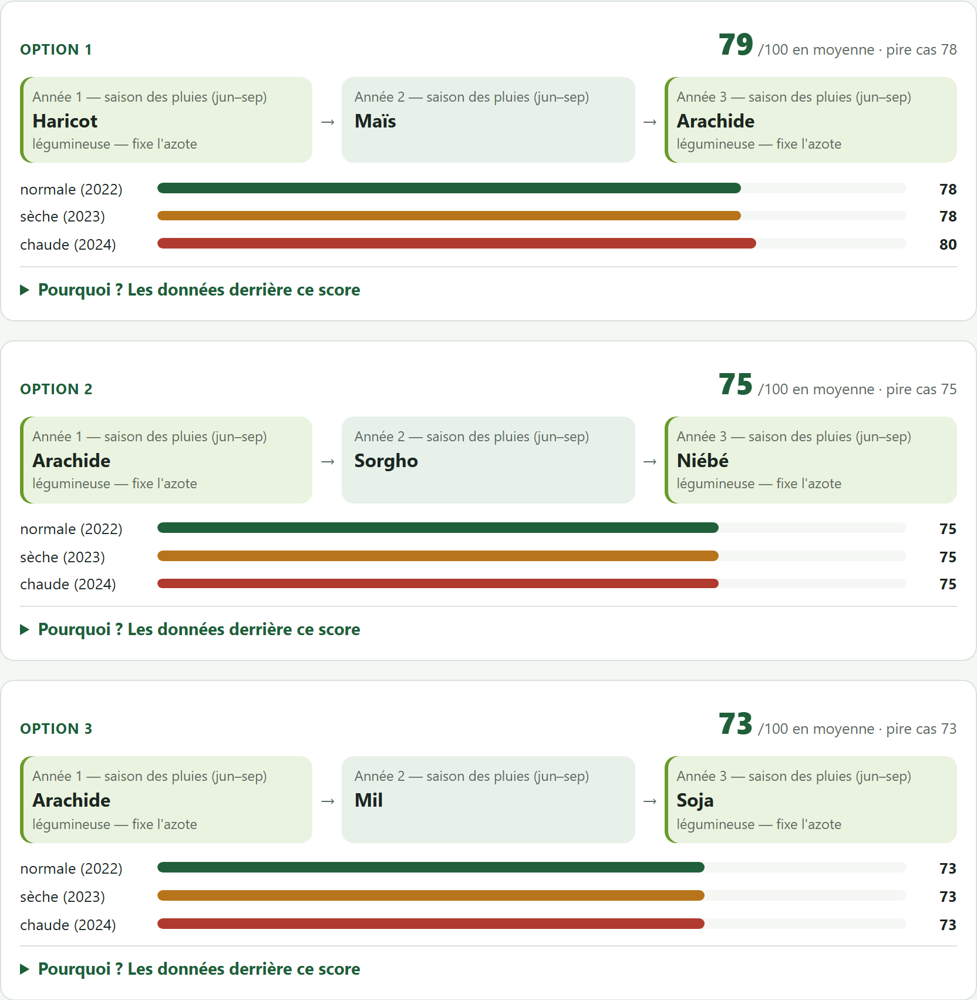
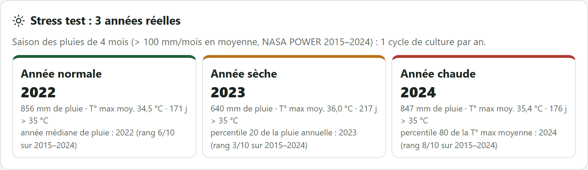
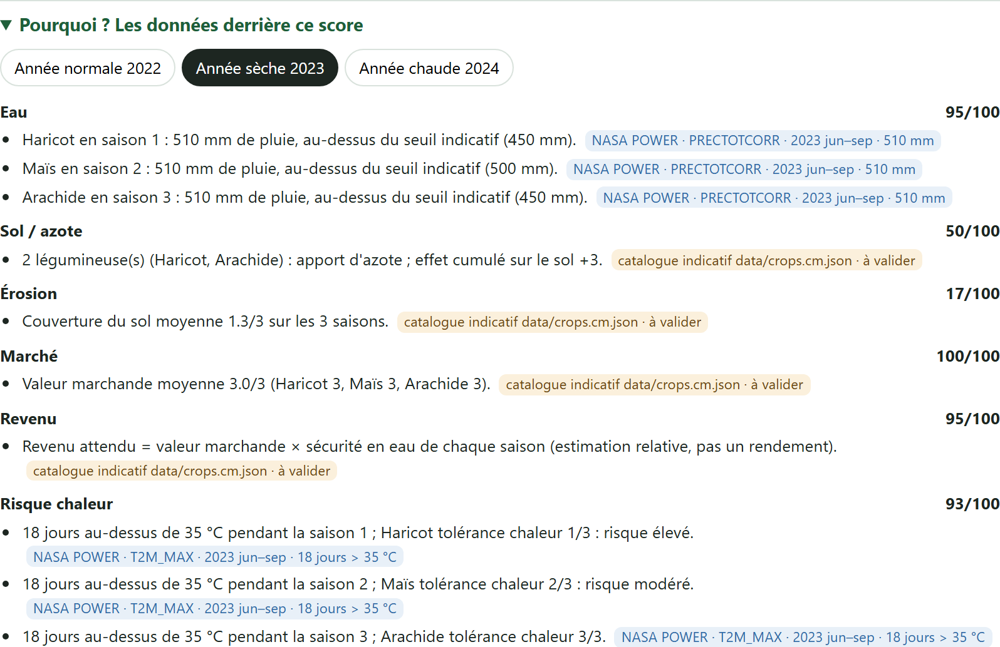

Maroua, Extrême-Nord du Cameroun — pluie mesurée par la NASA
856 mmen 2022
640 mmen 2023
Que semer après le maïs ?
Le climat réel de votre champ

Pluie PRECTOTCORR
Chaleur T2M_MAX
Humidité du sol GWETROOT
Votre sol, vos priorités, trois rotations



Chaque score cite sa donnée

NASA POWER · PRECTOTCORR · 2023 jun–sep · 510 mm
Fonctionne hors lignesur le téléphone, pour les zones enregistrées
Répond par SMS
NIEBE MAROUA
RotaSat Maroua: Arachide>Mais>Niebe 77/100. Annee seche 2023 (510 mm en saison): 76/100. A valider avec technicien MINADER.
RotaSat Cameroun
L'outil appuie l'agriculteur, sans le remplacer.
NASA Space Apps 2026 — Field Shift · github.com/Jephtetekeu/RotaSat-cm
AI-generated voice · video built with AI assistance